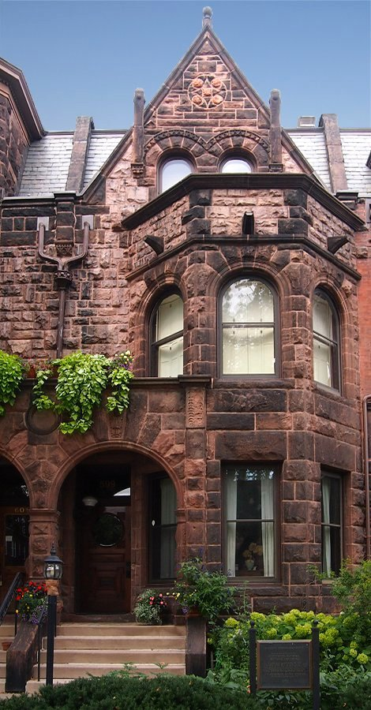
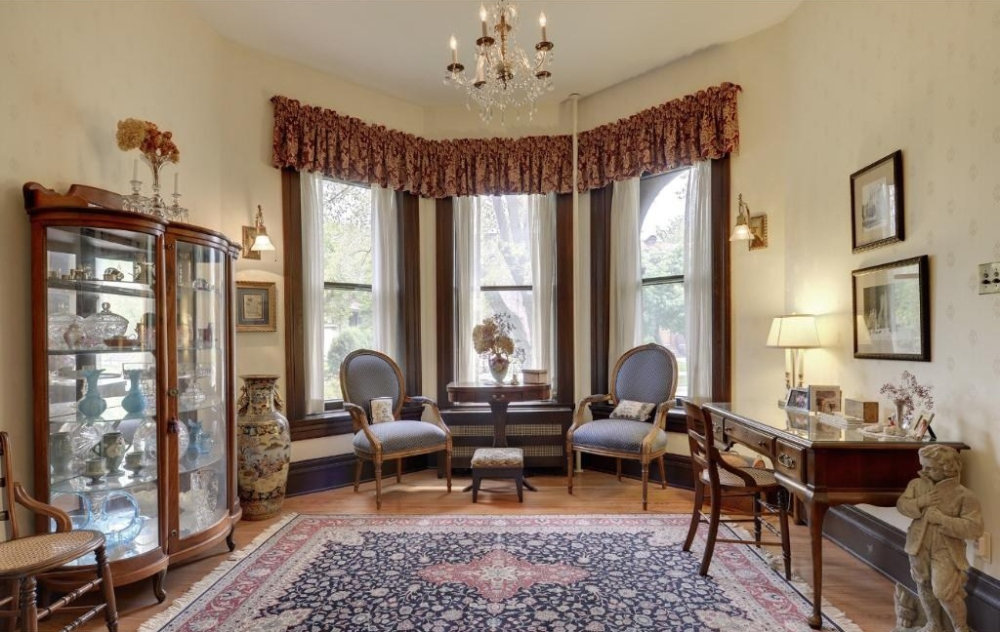

F. Scott Fitzgerald's House
The F. Scott Fitzgerald House, also known as Summit Terrace, in Saint Paul, Minnesota, United States, is part of a rowhouse designed by William H. Willcox and Clarence H. Johnston, Sr. The house, at 599 Summit Avenue, is listed as a National Historic Landmark for its association with author F. Scott Fitzgerald. The design of the rowhouse was called the "New York Style", where each unit was given a distinctive character similar to rowhouses in eastern cities. Architecture critic Larry Millett describes it as "A brownstone row house that leaves no Victorian style unaccounted for, although the general flavor is Romanesque Revival." The Fitzgerald house is a brownstone two bays wide, with a polygonal two-story window bay on the right, and the entrance, recessed under a round arch that is flush with the bay front, on the left. At the mansarded roof level there is a gable with two round-arch windows and decorative finials.
Fitzgerald's parents, Edward and Mollie, moved back to St. Paul in 1914 while F. Scott Fitzgerald was a student at Princeton University. They lived in the unit at 593 Summit Avenue for a while, then moved to the 599 Summit Avenue unit in 1918. In July and August 1919, Fitzgerald rewrote the manuscript that became his first novel, This Side of Paradise. He lived here until January 1920, writing short stories, and then moved to New Orleans. Of the several places the Fitzgeralds lived, this one is most closely associated with his literary fame, and typifies the environments of some of his later works.
